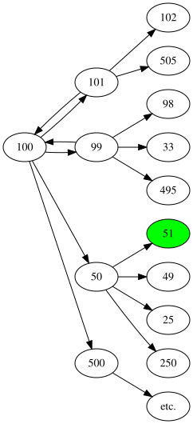

MADS
The rules
M.A.D.S (Multiply, Add, Subtract, Divide) is a simple task that uses just basic arithmetic. Given two integers x and y, you need to find the least number steps from x to y using a set of operations. This may or not have been a homework assignment of a friend of mine, whose identity I shall protect (It goes without saying that I did not do his homework...). Anyway, in just like in the assignment, we will only be using the following operations:- Add one
- Subtract one
- Divide by 2
- Divide by 3
- Multiply by 5
Note that division operations are only allowed to have integer results, in other words we may only divide by \(d\) if \(x = kd\).
Let's see an example:
- \(x = 100, y = 51\)
- \(x \leftarrow x/2\)
- \(x \leftarrow x + 1\)
- \(x = 51 = y\)
- done in 2 steps!
A lemma
Because the rules include \(+1\) and \(-1\), it trivially follows from induction that there always is a solution (just keep adding or subtracting 1 until you are done). This solution costs \(|x-y|\) steps, which is thus an upper bound to the number of steps required to solve the problem.Estimating the size of search space
If we naively search every possible number, how many numbers do we have to plow through? Well we have to keep searching until we find our solution. At every turn we create 5 new numbers which each spawn 5 more until we have found y after repeating this process to a depth of our solution s. This means that our search space is bounded by \(O(5^{s})\).
However, we can actually be a bit more precise because the division operations are not always legal. We only divide by 2 half of the time and divide by 3 a third of the time. So the search space is 'only' \(O((3\frac{5}{6})^s)\).
Modelling the problem as a graph
If we consider to problem to be a graph problem, by interpreting each number as a node with up to 5 outgoing edges to other numbers, we can call upon the battle tested, and famous algorithm of Dijkstra: Dijkstra's shortest path.

Since we are only interested in the shortest number of operations, and do not actually care which operations, we simply assign a cost of 1 to each edge. If you are already familiar with Breadth First Search, then you might understand Dijkstra as simply Breadth First Search using a priority queue. But since every edge incurs a cost of precisely one, we will actually never need the priority property and Dijkstra simplifies to just BFS.
Implementation 1: Just BFS
We simply do a BFS using a work queue, containing pairs of a number and the number of steps taken to get there. Besides keeping track of the amount of time spent, we also keep track of the number of nodes we visit using the variableticks.
use std::collections::VecDeque;
use std::time::Instant;
fn main() {
const X : u32 = 400;
const Y : u32 = 410;
bfs(X, Y);
}
fn bfs(x: u32, y: u32) {
let start = Instant::now();
let mut work : VecDeque<(u32, u32)> = VecDeque::from([(x, 0)]);
let mut ticks = 0;
while let Some((value,nr_steps)) = work.pop_front() {
ticks +=1;
if value == y {
println!("BFS: answer is {} in {} ticks or {:?}", nr_steps, ticks, start.elapsed());
break;
}
if value % 2 == 0 { work.push_back((value/2, nr_steps+1)); }
if value % 3 == 0 { work.push_back((value/3, nr_steps+1)); }
work.push_back((value-1, nr_steps+1));
// prevents overflow
work.push_back((value+1, nr_steps+1));
if value < u32::MAX/5 { work.push_back((value*5, nr_steps+1)); }
}
}
full source
BFS: answer is 8 in 16600 ticks or 282.945µs
n steps, we know
a fact that we can reach this number in at most n steps already, and thus we can prune this branch of the search tree.
Implementation 2: BFS with pruning
Very similar to the first implementation, with the exception that we keep track of visited nodes using a hashset. In the while loop we can then first check if this node has been visited before, and if so we can skip it.
use std::collections::VecDeque;
use std::collections::HashSet;
use std::time::Instant;
fn main() {
const X : u32 = 400;
const Y : u32 = 410;
bfs(X, Y);
bfs_pruned(X, Y);
}
fn bfs_pruned(x: u32, y: u32) {
let start = Instant::now();
let mut work : VecDeque<(u32, u32)> = VecDeque::from([(x, 0)]);
let mut visited : HashSet<u32> = HashSet::new();
let mut ticks = 0;
while let Some((value,nr_steps)) = work.pop_front() {
ticks +=1;
if visited.contains(&value) { continue; }
visited.insert(value);
if value == y {
println!("BFS_pruned: answer is {} in {} ticks or {:?}",
nr_steps, ticks, start.elapsed());
break;
}
if value % 2 == 0 { work.push_back((value/2, nr_steps+1)); }
if value % 3 == 0 { work.push_back((value/3, nr_steps+1)); }
work.push_back((value-1, nr_steps+1));
work.push_back((value+1, nr_steps+1));
if value < u32::MAX/5 { work.push_back((value*5, nr_steps+1)); }
}
}
full source
BFS_pruned: answer is 8 in 3362 ticks or 189.221µs
Implementation 3: Simultaneous BFS with pruning
There is a very important insight to be made here. We already know what number we are looking for. We could - if we wanted - invert the problem by starting at y and inverting all the operations. This in itself does not yield any benefit. However, if we start at both the start AND the end point, we can expect to meet in the middle! What this allows us to do is reduce the search space to \(O((3\frac{5}{6})^\frac{s}{2})\). We are effectively left with a search space of only the square root of the original search space!
To facilitate this bidirectional search, we create a direction enum, so that we can keep track of which side of the search we are on in our shared work queue. We also keep track of two separate visited collections, but now with a key value pair where the value indicates the number of steps taken to get to that node. So if we now arrive at a certain node in 5 steps, and discover that the visisted collection of the opposite direction can reach this number in 6 steps, we can conclude that by taking those 6 steps in reverse we can reach y, and simply report 5+6 as our final answer.
#[derive(PartialEq, Clone)]
enum Direction {
Forward,
Backward,
}
fn bfs_simul(x: u32, y: u32) {
let start = Instant::now();
let mut work : VecDeque<(u32, u32, Direction)> =
VecDeque::from([(x, 0, Direction::Forward), (y, 0, Direction::Backward)]);
let mut forward_visited : HashMap<u32, u32> = HashMap::new();
let mut backward_visited : HashMap<u32, u32> = HashMap::new();
let mut ticks = 0;
while let Some((value,nr_steps,dir)) = work.pop_front() {
ticks += 1;
match dir {
Direction::Forward => {
if let Some(nt) = backward_visited.get(&value) {
println!("BFS_simul: answer is {} in {} ticks or {:?}",
nr_steps+nt, ticks, start.elapsed());
break;
}
if forward_visited.contains_key(&value) {
continue;
}
forward_visited.insert(value, nr_steps);
if value % 2 == 0 { work.push_back((value/2, nr_steps+1, dir.clone())); }
if value % 3 == 0 { work.push_back((value/3, nr_steps+1, dir.clone())); }
if value < u32::MAX/5 { work.push_back((value*5, nr_steps+1, dir.clone())); }
work.push_back((value+1, nr_steps+1, dir.clone()));
work.push_back((value-1, nr_steps+1, dir.clone()));
}
Direction::Backward => {
if let Some(nt) = forward_visited.get(&value) {
println!("BFS_simul: answer is {} in {} ticks or {:?}",
nr_steps+nt, ticks, start.elapsed());
break;
}
if backward_visited.contains_key(&value) {
continue;
}
backward_visited.insert(value, nr_steps);
if value % 5 == 0 { work.push_back((value/5, nr_steps+1, dir.clone())); }
if value < u32::MAX/2 { work.push_back((value*2, nr_steps+1, dir.clone())); }
if value < u32::MAX/3 { work.push_back((value*3, nr_steps+1, dir.clone())); }
work.push_back((value+1, nr_steps+1, dir.clone()));
work.push_back((value-1, nr_steps+1, dir.clone()));
}
}
}
}
full source
BFS_simul: answer is 8 in 299 ticks or 27.73µs
Turning up the heat
Thus far we have been working with a relatively small example. Let's see how our implementations perform with an x, y pair that is a bit further apart. Through random experimentation I have found that x = 32432, y = 2310024 lie 20 steps apart. Tragically, the naive implementation crashes because it runs out of memory. We can still compare BFS_pruned to BFS_simul:
BFS_pruned: answer is 20 in 32042670 ticks or 2.742120725s
BFS_simul: answer is 20 in 83995 ticks or 4.676884ms